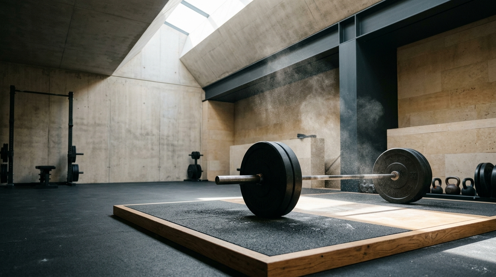
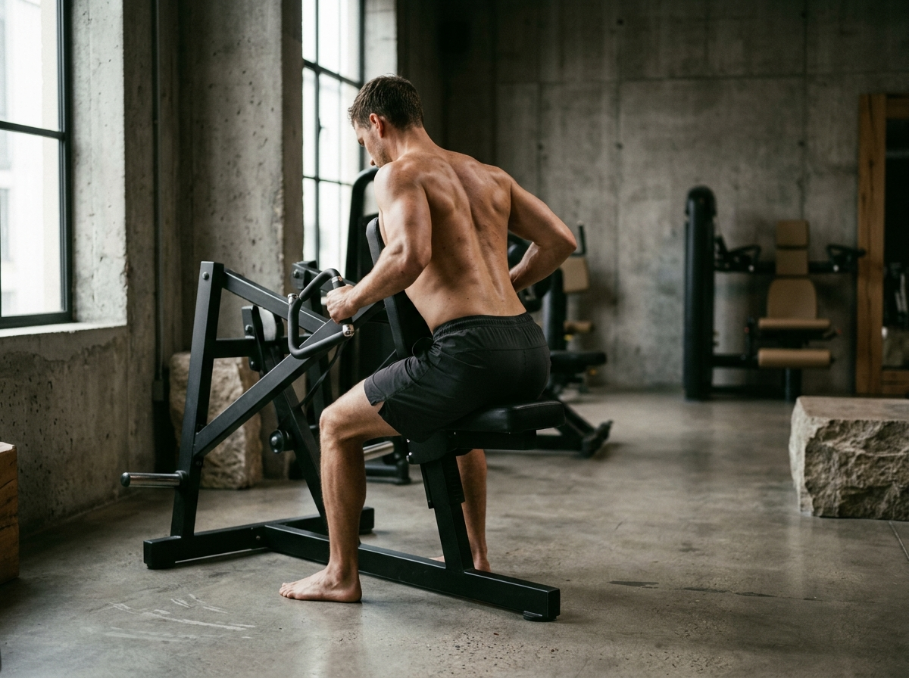

Son 5 Tekrar Prensibi
Kas gelişimi 8-12 tekrar ezberine değil, yüksek eşikli Tip 2 liflerin katılımına ve kasılma hızının zorlanma nedeniyle istem dışı yavaşlamasına bağlıdır.
Optimal aralık: Bileşik 5-10 · İzole 10-15 tekrar

Sektördeki ezberlerden uzak, güncel spor bilimi literatürüne dayanan antrenman programları, aktif yetersizlik çözümleri ve doğrulanmış vücut ölçüm araçları.
Güncel meta-analizler ve saha verileriyle doğrulanan, kas büyümesini ve kuvvet artışını doğrudan belirleyen fizyolojik parametreler.
Kas gelişimi 8-12 tekrar ezberine değil, yüksek eşikli Tip 2 liflerin katılımına ve kasılma hızının zorlanma nedeniyle istem dışı yavaşlamasına bağlıdır.
1. set 1.00, 2. set 1.39, 3. set 1.61 birim uyarı üretir. Aynı kasa tek seansta 15-25 set yığmak protein sentezini inşa yerine hasar onarımına harcar.
Kas protein sentezi 30-48 saatte biter ve 4-5. günde mikro atrofi başlar. Haftada 2 kez 1 set çalışmak, haftada 1 kez 8 setten daha fazla kas uyarısı verir.
30-60 saniye dinlenme merkezi ve bölgesel bitkinliği artırıp yüksek eşikli lifleri kapatır. Ağır bileşiklerde uzun dinlenme daha yüksek mekanik gerilim sağlar.
Set eklemek, dinlenmeyi kısaltmak veya bilerek yavaşlatmak progressive overload değildir. 2-3 haftada bir aynı tam ROM ile ağırlık, tekrar veya RIR artmalıdır.
Ortalama 1.80m doğal bir erkek ~20-25 kg saf kas ekleyebilir. Bunun 13-14 kg'ı alt gövdededir; bacak çalışmak metabolizmayı ve yağ yakımını katbekat hızlandırır.

Bileşik hareketler toplam gelişimin %70-80'ini pratik şekilde kapatır. Ancak çift eklemli kaslarda (Rectus Femoris, Triceps Long Head, Gastrocnemius, Hamstring) başka kaslar önce tükendiği veya kas aktif yetersizliğe düştüğü için stabil izole hareketler zorunludur.
Ayrıca antrenmanın %90'ı normal Full ROM olmalıdır. Uzun kas boyunda kısmi tekrarlar yüksek hasar ürettiği için stratejik ve sınırlı kullanılmalıdır.
11 Kas Grubu Biyomekaniğini İncele →Haftalık ayırabileceğin gün sayısına göre filtrele. Definasyon dönemindeysen koruma modunu açarak set hacmini otomatik 1-2 sert sete çek.
Evde 100 şınavlık kardiyo rutinleri yerine mekanik gerilimi yüksek, aktif yetersizliği çözen gerçek hipertrofi hareketleri. Elindeki ekipmanları işaretle, programın anında güncellensin.
Bilimsel temeli olmayan somatotip veya BIA tartı tahminleri yerine klinik ve sportif literatürde geçerliliği kanıtlanmış 4 ölçüm sistemi. Verilerin cihazında otomatik saklanır.
Hesaplama, düşük ve orta tekrar aralıklarında (1-10 tekrar) en tutarlı sonuç veren Epley ve Brzycki formüllerinin ortalamasını kullanır.
DOTS, farklı vücut ağırlıklarındaki sporcuların göreceli kuvvetini Wilks'e göre daha dengeli kıyaslayan modern uluslararası powerlifting katsayısıdır.
Dinlenik nabzı sabah uyanınca yataktan kalkmadan ölç. Karvonen yöntemi, basit (220 - yaş) tahmininden farklı olarak gerçek kondisyonunu (kalp hızı rezervini) hesaba katar.
İyi ve kötü egzersiz seçimi arasında hedef kas özelinde 5 ila 15 kata varan fark vardır. Bir kas grubu seçerek S-Tier hareketleri ve aktif yetersizlik çözümlerini gör.
Öne çıkan 15 supplementin kanıt düzeyine göre sınıflandırılması. Para tuzağı olan ürünleri filtrele ve testosteron sağlığını etkileyen 7 temel alışkanlığı denetle.
Sadece salonun içindeki 1 saat değil, günün kalan 23 saatini yöneten bilimsel protokoller.